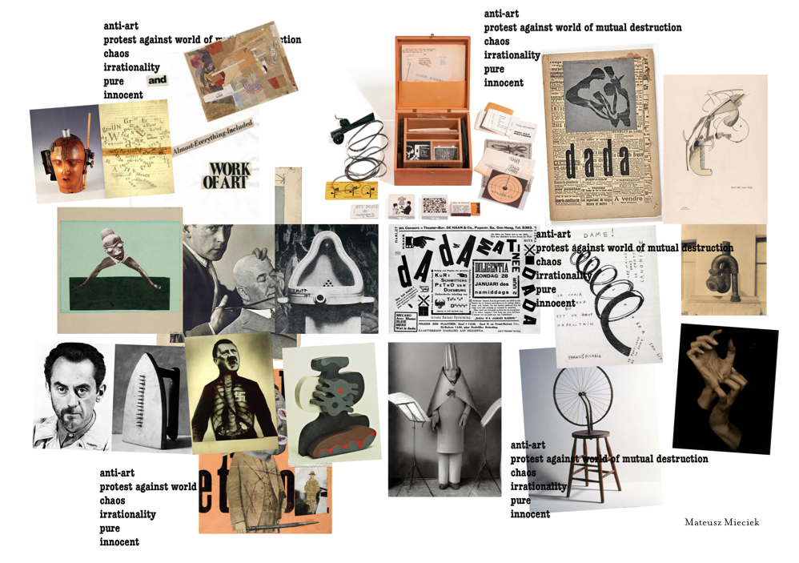

responsive website
At the beginning of this theme. I did not have previous experience with coding.
I was really lucky that for my first task I got dadaism as a style. I was always very intrigued by that movement but this was first time I dug really deep into the subject.
Starting with tristan tzara's manifesto I discovered read more and more on a subject at the same time trying to do website my first website. I learned a lot about their approach and it's similarities to zen practices.I implemented that knowledge about asymmetry, purity and irrationality into my project.
I was trying to make a site that was a jurney, a thought provoking experience and experiment in css animation and interactions. My first iteration didn’t get accepted but through improving it I understood how to write simpler and better code.
That was probably the most inspiring exercise for me. It sparked a lot of interest in programming interactions which I was going to explore a lot more in the future.  link to website